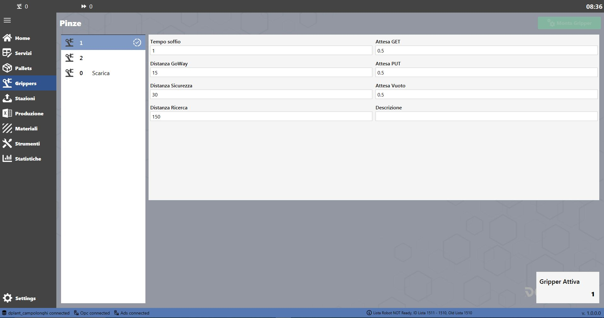
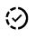
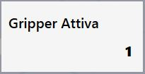

The Grippers page provides the following functions (if supported by the model, e.g. A):

Magazine
The “Magazine” page displays the data for each available gripper, indicates which one is installed and allows a gripper change to be commanded:
 | Grippers  |
 | # Gripper |
 | Change gripper |
Gripper details
Several properties are defined for each gripper
Blow time | Delay between activating the blow and switching it off |
GoWay distance | Release and initial piece-lifting distance from the worktable/conveyor after pickup |
Safety distance | Secondary lifting distance after picking up the piece and lifting distance after releasing it |
Search distance | |
GET delay | Delay after activating the vacuum when picking up the piece |
PUT delay | Delay after deactivating the vacuum when releasing the piece |
Vacuum delay | Delay between activating the vacuum and receiving the vacuum-present signal |
Description | Gripper description |